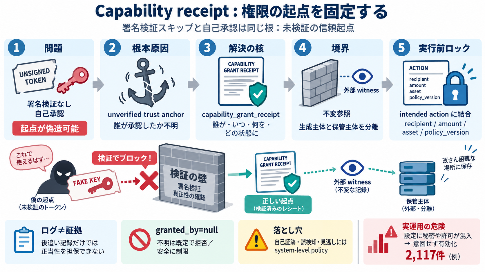

GitGuardian Reports an 81% Surge of AI-Service Leaks as 29M Secrets Hit Public GitHub
3. MCP configuration risk is emerging: MCP server documentation often recommends placing credentials directly in configu…

3. MCP configuration risk is emerging: MCP server documentation often recommends placing credentials directly in configu…
3. MCP configuration risk is emerging: MCP server documentation often recommends placing credentials directly in configu…
The plugin includes GitGuardian Developer MCP server configuration for supported hosts: | Host | Config file | --- | |…
10 Jun 2026 – 4 min read GitGuardian Now Flags Admin and Overprivileged Identities Across AWS, Entra, and Okta Produc…
MCP configs deserve the same treatment as application secrets. Exclude sensitive local configs from version control, sca…